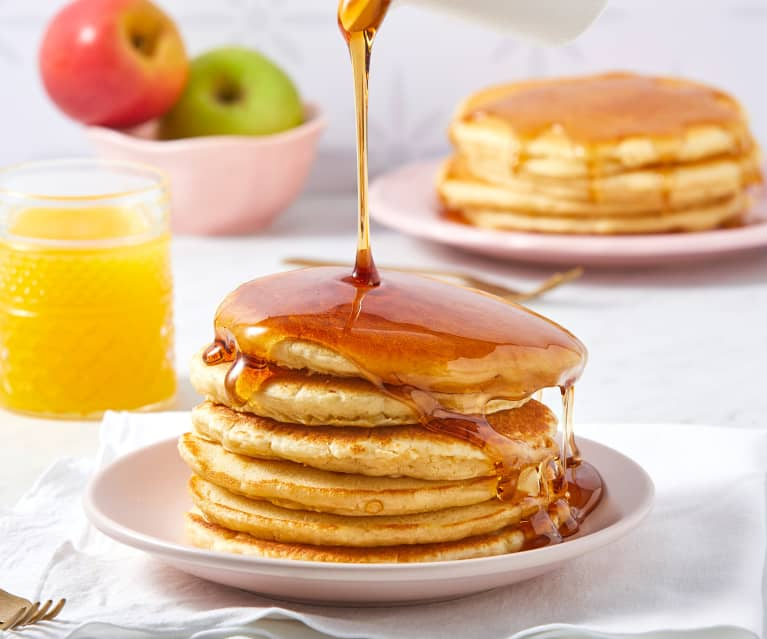

Buttermilk Pancakes

Description
As convenient as a store-bought mix can be,
every home cook needs a good buttermilk pancake recipe in their repertoire.
Don't have a tried-and-true favorite yet? You're in luck!
The Allrecipes community can't get enough of these classic buttermilk pancakes.
Reviewers say they're light, fluffy, moist, and full of rich flavor.
Ingriedients
- Flour
- Sugar
- Leaveners
- Salt
- Buttermilk
- Milk
- Eggs
- Butter
Steps
- Mix the dry ingredients: Combine flour, sugar, baking powder, baking soda, and salt in a large bowl.
- Mix the wet ingredients: Beat the buttermilk, milk, eggs, and melted butter together in a separate bowl. Do not combine the wet and dry ingredients until right before you cook the pancakes.
- Make the pancakes: Add the wet ingredients to the dry ingredients and mix with a wooden spoon or fork until the mixtures are just-blended. Scoop the batter onto a hot, oiled griddle and cook until the pancake is bubbly on the top. Flip with a spatula and cook until both sides are brown.